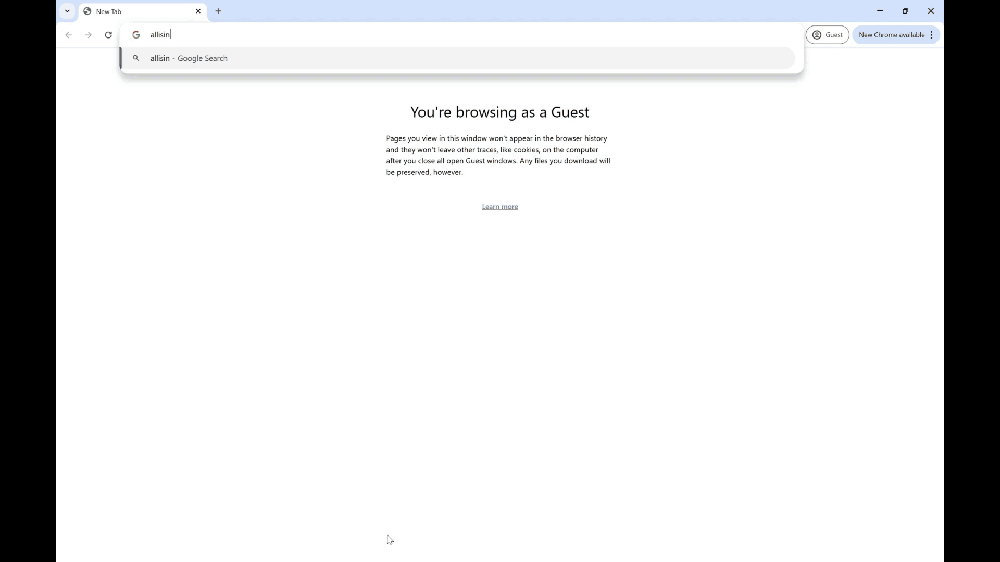

Certain Songs are Cursed
I was asked by Anthony Pinter, a professor at the University of Colorado Boulder, to design a unique and informative page for his project, Certain Songs Are Cursed, which explores how memory and emotion are captured or evoked by music. Using HTML, CSS, and JS, I created a page to match the project vision and provide insights on his research.


TEDxCU.com
As part of my work with TEDxCU, I redesigned the official website. Replacing its outdated and unresponsive design, I gave it a new, modern look, implementing UI/UX practices and ensuring responsiveness for all screen sizes.
Capstone project: All Is In Mercury
For my capstone project, my partner and I are created a mock forum website that allows users to interact, explore, and uncover a larger story using clues scattered around the website. The full process can be found here.
